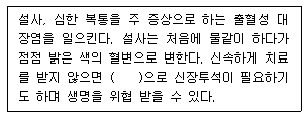
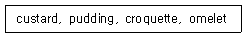

조리산업기사(공통) (2003-08-10 기출문제)
1과목: 식품위생 및 관련법규
1. 열을 이용한 물리적 살균 소독법과 그 대상이 잘못 연결된 것은?
- 고압증기 멸균법 - 통조림
- 화염 살균법 - 전염병 사체
- 열탕(자비) 소독법 - 행주
- 건열 살균법 - 식기
(정답률: 74%)

2. 조리사를 꼭 두어야 하는 경우는?
- 허가면적이 100m2인 식품접객업소
- 중소기업자 등이 운영하는 집단급식소
- 복어를 조리, 판매하는 식품접객업소
- 운영자 자신이 조리사가 되어 직접 음식을 조리하는 집단급식소
(정답률: 97%)
3. 다음은 Escherichia coli O157:H7 에 의한 식중독의 증상에 관한 설명이다. 괄호 안에 들어갈 증상은?

- 수막염
- 결절성 홍반
- 후천성 면역 결핍증
- 용혈성 요독 증후군
(정답률: 88%)
4. 황색 포도상구균에 의한 식중독의 예방방법과 관련된 내용으로 잘못된 것은?
- 화농성 질환을 앓고 있는 사람이 음식을 다루지 않도록 해야 한다.
- 엔테로톡신이 열에 쉽게 파괴되기 때문에 섭취 전가열 원칙을 잘 지킨다.
- 식품취급자의 개인위생이 특히 중요하다.
- 식품은 저온에서 보관하고 조리 후에는 가능한 한 빨리 먹도록 한다.
(정답률: 85%)
5. 복어에 의한 식중독은 동물성 자연독 식중독 중 대표적인 것이며 치사율도 높다. 중독을 일으키는 독소의 이름은?
- Solanine
- Tetrodotoxin
- Amygdalin
- Domoic acid
(정답률: 94%)
6. 단백질 식품의 분해과정이 아닌 것은?
- 초산 반응
- 탈탄산 반응
- 가수분해 반응
- 탈아미노 반응
(정답률: 70%)
7. 주류를 판매할 수 없는 영업의 종류는?
- 유흥주점영업
- 단란주점영업
- 휴게음식점영업
- 일반음식점영업
(정답률: 100%)
8. 조리사의 면허를 취소할 수 있는 경우가 아닌 것은?
- 면허증을 분실한 경우
- 정신질환을 앓게 된 경우
- 면허를 타인에게 대여하여 이를 사용하게 한 때
- 조리업무에 있어서 식중독 기타 위생상 중대한 사고를 발생하게 한 때
(정답률: 93%)
9. 식품 부패의 원인으로 거리가 가장 먼 것은?
- 산소
- 수분
- 온도
- 압력
(정답률: 92%)
10. 다음 세균성 식중독 중 잠복기가 가장 짧은 것 은?
- 포도상구균 식중독
- 살모넬라 식중독
- 장염비브리오 식중독
- 보툴리누스 식중독
(정답률: 67%)
11. 곰팡이 독에 의한 식중독에 관한 설명 중 틀린 것은?
- 누룩곰팡이나 푸른곰팡이에 의해 생성된다.
- 주로 육류에서 발견된다.
- 곰팡이 독소에 의한 중독은 계절과 관계가 있다.
- 항생물질을 투여하여도 치료효과가 없다.
(정답률: 76%)
12. 식중독 환자를 진단한 의사 또는 한의사는 누구에게 즉시 보고하여야 하는가?
- 관할 보건소장
- 시∙ 도지사
- 식품의약품안전청장
- 보건복지부장관
(정답률: 52%)
13. 물리적 살균에 해당되지 않는 것은?
- 고압증기
- 자외선
- 화염
- 염소제
(정답률: 54%)
14. 조리사가 업무정지기간 중에 업무를 한 경우 행정처분은?
- 업무정지 1월
- 면허취소
- 업무정지 2월
- 업무정지 3월
(정답률: 96%)
15. 식품이 부패되는 과정에서 암모니아, 아민, 황화수소, 머캡탄(mercaptan) 등으로 분해되어서 불쾌한 냄새를 발생하는 영양소는?
- 지방
- 단백질
- 비타민
- 탄수화물
(정답률: 96%)
16. 우리 나라 식품위생법의 목적이 아닌 것은?
- 국민보건의 증진
- 새로운 식품의 개발
- 식품영양의 질적 향상을 도모
- 식품으로 인한 위생상의 위해방지
(정답률: 96%)
17. 초기부패 판정으로 사용되어지는 화학적 검사에 해당하는 항목이 아닌 것은?
- 휘발성 염기질소
- 트리메틸아민
- pH
- 히스티딘
(정답률: 58%)
18. 다음 금속 중 미나마타병의 원인이 되는 물질은?
- 납(Pb)
- 주석(Sn)
- 수은(Hg)
- 카드뮴(Cd)
(정답률: 87%)
19. 살모넬라 식중독의 예방법으로 가장 적절한 것은?
- 냉동
- 가열
- pH 저하
- 자외선 살균
(정답률: 93%)
20. 시판 중인 락스의 주성분으로 유효염소가 4% 정도이며, 소독, 표백, 탈취의 목적으로 널리 사용되는 소독제는?
- 크레졸
- 석탄산
- 표백분
- 차아염소산나트륨
(정답률: 76%)
2과목: 식품학
21. 다음 중 견과류에 속하는 것은?
- 살구
- 오이
- 자두
- 호두
(정답률: 89%)
22. 칼슘의 체내에서의 기능으로 적합하지 않은 것은?
- 조혈작용
- 치아와 골격의 형성
- 혈액의 응고
- 근육의 수축
(정답률: 52%)
23. 제빵시 이스트의 발효에 의해 생성되는 성분으로 빵의 향에 관련이 있는 물질은?
- 알데히드
- 케톤
- 에틸알콜
- 에스테르
(정답률: 55%)
24. 지방을 과도하게 가열하면 자극성 가스가 발생한다. 그 원인은?
- 공기 중 산소에 의해 산화되어 저급의 불포화 알데히드(aldehyde)가 생성되어서
- 지방의 분해시 생성된 글리세롤(glycerol)의 계속적 분해로 아크롤레인(acrolein)이 생성되어서
- 열에 의해 지방산이 분해되어서
- 발연점이 저하되기 때문에
(정답률: 58%)
25. 단백질의 변성 중 조리와 가장 관련이 큰 요인은?
- 교반
- 가열
- 산
- 알콜
(정답률: 80%)
26. 어류가 육류보다 더 저온에서 젤라틴으로 바뀌는 것은 콜라겐의 어떤 성분이 더 적게 함유되었기 때문인가?
- 아미노산(amino acid)
- 젖산(lactic acid)
- 하이드록시프로린(hydroxyproline)
- 미오신(myosin)
(정답률: 36%)
27. 한국인 영양권장량에서 제시한 식사구성안에 대한 설명 중 틀린 것은?
- 식품을 종류에 따라 분류하여 식품군을 나눔
- 식품군을 5가지 기초식품군으로 나눔
- 대표적인 연령군에 대하여 각 식품군에서 1일 섭취해야 할 횟수 제시
- 많이 섭취하는 식품을 중심으로 한번에 섭취하는 1인 3회 분량을 설정
(정답률: 66%)
28. 육엑스분(meat extract)에 대한 설명 중 틀린 것은?
- 육류를 물과 함께 가열할 때 용출되는 성분으로 약 2%에 달한다.
- 유기산으로 소량의 succinic acid도 함유한다.
- 육엑스분(meat extract) 성분은 모두 단백질이 분해된 물질들이다.
- Inosinic acid, glutamic acid가 주된 맛 성분이다.
(정답률: 54%)
29. 가공육의 적색성분은?
- 니트로소미오글로빈
- 메트미오글로빈
- 옥시미오글로빈
- 콜레미오글로빈
(정답률: 43%)
30. 40%의 글루코오스(분자량 180) 용액의 Aw는? (H2O의 분자량=18)
- 약 0.65
- 약 0.75
- 약 0.80
- 약 0.94
(정답률: 45%)
31. 유지의 자동산화에서 생성되는 물질이 아닌 것은?
- 알데히드(aldehyde)
- 케톤(ketone)
- 하이드로퍼옥사이드(hydroperoxide)
- 시너지스트(synergist)
(정답률: 54%)
32. 마죠람보다 더욱 강한 맛을 지닌 민트과에 속하는 조그마한 식물로, 피자와 파스타 등에는 건조시킨 잎이나 곱게 간 파우더를 이용하고, 신선한 것은 소스나 드레싱의 장식용 등 주로 멕시칸과 이탈리아 요리에 사용되는 허브(Herbs)는?
- 오레가노(Oregano)
- 파슬리(Parsley)
- 커리앤더(Coriander)
- 로즈마리(Rosemary)
(정답률: 54%)
33. 펙틴(pectin)을 이용한 가공식품이 아닌 것은?
- 쥬스(juice)
- 잼(jam)
- 젤리(jelly)
- 마말레이드(marmalade)
(정답률: 84%)
34. 다음 식품 중 3대 영양소가 가장 고르게 함유된 식품은?
- 쇠고기
- 흰밥
- 우유
- 계란
(정답률: 70%)
35. 천연검 물질의 용도로 적합하지 않는 것은?
- 팽윤제
- 건조제
- 안정제
- 증점제
(정답률: 51%)
36. 차에 대한 설명 중 틀린 것은?
- 차 잎에는 Vitamin C 가 많이 함유되어 있으나, 녹차는 홍차보다 상당량이 파괴된다.
- 차의 맛은 caffeine, tannin 등에 의한다.
- 녹차는 발효시키지 않고 건조시킨 제품이다.
- 차의 색은 chlorophyll, flavonoid, carotenoid 등에 의한다.
(정답률: 64%)
37. 식품과 유기산의 연결이 적당한 것은?
- 귤 - 구연산
- 콜라 - 구연산
- 포도 - 젖산
- 사과 - 젖산
(정답률: 66%)
38. 버섯에 함유된 비타민 D의 전구체 물질은?
- 콜레스테롤(cholesterol)
- 만니톨(mannitol)
- 에르고스테롤(ergosterol)
- 알칼로이드(alkaloid)
(정답률: 74%)
39. 팬 케이크를 구울 때 우유를 사용하면 아름다운 빛깔이 나오는 것은 우유 단백질의 성분과 어느 성분이 반응해서인가?
- 첨가한 식염
- 우유의 칼슘
- 첨가한 당
- 밀가루 중의 글루텐
(정답률: 70%)
40. 토마토 가공품 중 고형분량이 25% 정도이며 조미하지 않은 것은?
- 토마토 쥬스
- 토마토 퓨레
- 토마토 소스
- 토마토 페이스트
(정답률: 58%)
3과목: 조리이론 및 급식관리
41. 육류를 건열조리할 때 가장 적당한 부위로만 묶인 것은?
- 등심, 안심, 콩팥, 갈비
- 등심, 안심, 사태, 채끝살
- 안심, 양지, 사태, 장정육
- 등심, 안심, 양지, 사태
(정답률: 59%)
42. 어패류의 조리원리로 옳은 것은?
- 생선을 조리면 질감이 연하게 느껴지는 것은 젤라틴이 물을 흡수하여 콜라겐이 되기 때문이다.
- 생선구이시 생선에 뿌리는 소금의 적당한 양은 재료 무게의 10% 정도가 좋다.
- 생선찌개의 경우 건더기는 국물의 2/3 정도가 좋다.
- 어패류는 결합조직이 많아져 부스러지기 쉬우므로 자주 뒤집지 않도록 한다.
(정답률: 64%)
43. 일일 식자재 구매 요청서(Market List)에 들어가지 않는 식자재는?
- 달걀
- 쇠고기
- 생선류
- 쥬스류
(정답률: 86%)
44. 국이나 스튜(Stew) 등의 지미성분이 우러나오도록 조리해야 할 때의 적당한 불 조정은?
- 처음부터 센불로
- 처음부터 중간불로
- 처음에는 센불에서, 끓기 시작하면 중간불로
- 처음에는 약한불에서, 끓기 시작하면 중간불로
(정답률: 80%)
45. 배식에 대한 설명 중 가장 틀린 것은?
- 색, 형태 등을 고려하여 식기에 담아 식욕을 돋구어야 한다.
- 급식시 음식은 적온으로 공급한다.
- 피급식자의 영양과는 관계없이 항상 일정한 배식량을 유지한다.
- 준비한 음식이 모자라면 새로 조리한 다른 음식을 제공한다.
(정답률: 78%)
46. 작업개선의 목표 중 관계가 적은 것은?
- 신속성
- 용이성
- 신축성
- 경제성
(정답률: 63%)
47. 작업관리를 할 때 작업을 연구하는 목적이 아닌 것은?
- 종업원의 복리와 능률향상을 추구한다.
- 표준작업을 설정하여 작업을 지도한다.
- 생산능률을 올리고 생산가를 저하시킨다.
- 작업의 단순화, 기계화, 자동화를 추구한다.
(정답률: 59%)
48. 달걀 흰자의 거품을 잘 일어나게 하는 것은?
- 주석산
- 우유
- 설탕
- 크림
(정답률: 64%)
49. 다음 조리기기의 용도를 바르게 나타낸 것은?
- Slicer - 채소 다지기
- Grinder - 재료 혼합기
- Peeler - 껍질 벗기기
- Chopper -밀가루 반죽기
(정답률: 91%)
50. 검수원이 대조하여야 할 서류가 아닌 것은?
- 발주서
- 구매 의뢰서
- 거래 명세서
- 창고 물품 불출서
(정답률: 79%)
51. 다음 사항 중 전자레인지(microwave oven) 조리의 특징이 아닌 것은?
- 조리시간을 단축할 수 있다.
- 갈변현상이 일어나지 않는다.
- 식품을 먹을 그릇에 담은 채 조리할 수 있다.
- 한번에 다량의 식품을 조리할 수 있다.
(정답률: 81%)
52. 메뉴계획모형 중 관리자의 관점이 아닌 것은?
- 예산
- 시설과 장비
- 음식의 습관과 선호
- 종사원의 기능
(정답률: 43%)
53. 기본 조리법 중 포칭(poaching)의 설명으로 옳은 것은?
- 철판위나 냄비, 후라이팬을 올려 놓고 요리한다.
- 육류와 가금류의 조리법으로 향신료와 갖가지 야채를 섞어서 오븐에 익힌다.
- 계란, 생선, 채소 등을 비등점 이하에서 요리하는 조리법으로 단백질을 보호하고 건조해지는 것을 방지한다.
- 야채나 과일 또는 소스를 만들 때 믹서를 이용하여 가는 방법이다.
(정답률: 63%)
54. 가격정책의 목표가 아닌 것은?
- 수익성
- 시장점유율 확대
- 성장률 유지
- 경쟁업체의 파산
(정답률: 85%)
55. 어떤 영업장의 월말 영업실적은 소모 식재료비가 700만원, 총매출액이 2,100만원이었다. 이 영업장의 식재료 비율은 약 얼마인가?
- 45%
- 33%
- 53%
- 39%
(정답률: 76%)
56. 조리장의 관리에서 식품별 관리요령 중 육류 및 생선류에 관한 설명이 틀린 것은?
- 달걀은 씻지 않고 냉장 상태에서 보관한다.
- 육류를 3∼4일 정도 보관할 때는 반드시 냉동시켜 보관한다.
- 건어물은 건조하고 서늘한 곳에서 보관한다.
- 어묵은 건조하고 서늘한 곳에서 보관한다.
(정답률: 48%)
57. 그릇세척기를 이용하여 건조할 때 그릇세척기 안의 공기 온도로 가장 적당한 것은?
- 65℃ 정도
- 85℃ 정도
- 100℃ 정도
- 120℃ 정도
(정답률: 73%)
58. 창고의 물품진열시 고려하지 않아도 되는 것은?
- 재고회전
- 물품의 포장
- 진열위치
- 사용빈도
(정답률: 79%)
59. 비가열 조리조작 중 썰기에 대한 목적으로 적당하지 않은 것은?
- 비가용부분을 제거하고 가식부분의 이용효율을 높인다.
- 재료의 표면적을 넓혀 열의 이동과 조미성분이 용이 하게 침투할 수 있도록 한다.
- 모양, 크기, 외관 등을 정리하여 음식을 아름답게 해준다.
- 고기, 우엉 등과 같은 식품은 섬유방향과 평행하게 썰면 질긴 느낌을 제거해 준다.
(정답률: 78%)
60. 다음의 조리는 달걀의 어떠한 성질을 이용한 것인가?

- 열응고성
- 기포성
- 유화성
- 팽창성
(정답률: 68%)
4과목: 공중보건학
61. 바이러스에 의한 질병은?
- 폴리오
- 장티푸스
- 콜레라
- 세균성이질
(정답률: 61%)
62. 대기오염을 일으키는 자동차 배기성분이 아닌 것은?
- 아황산가스(SOx)
- 질소산화물(NOx)
- 일산화탄소(CO)
- 암모니아(NH3)
(정답률: 85%)
63. DDT를 사용하지 않는 이유에 관한 설명 중 가장 타당한 것은?
- 위생해충이 DDT에 대해 내성이 강하다.
- 잔류효과가 뛰어나지 않다.
- 속효성은 강하나 잔류성이 약하다.
- 잔류성이 길어서 환경오염과 인체독성이 있다.
(정답률: 84%)
64. 음료수 중에 너무 많거나 적을 때 반상치나 충치를 일으키는 것은?
- 염소
- 규소
- 불소
- 비소
(정답률: 80%)
65. 민물고기를 생식함으로써 감염되는 기생충 질환은?
- 선모충증
- 구충증
- 광절열두조충증
- 무구조충증
(정답률: 79%)
66. 기생충과 중간숙주와의 연결이 틀린 것은?
- 무구조충 - 소
- 폐흡충 - 다슬기
- 간흡충 - 참붕어, 모래무지
- 회충 - 채소
(정답률: 50%)
67. Vitamin D 합성과 관계 있는 것은?
- 적외선
- γ선
- 자외선
- 우주선
(정답률: 75%)
68. 중앙난방법에 속하지 않는 것은?
- 공기 조절법
- 증기 난방법
- 지역 난방법
- 난로 난방법
(정답률: 59%)
69. 인공조명 중 눈의 건강에 가장 바람직한 조명방법은?
- 직접조명
- 일반조명
- 반직접조명
- 간접조명
(정답률: 82%)
70. 하수의 혐기성 처리법에 속하는 것은?
- 임호프 탱크법
- 활성슬러지법
- 살수여상법
- 안정지법
(정답률: 68%)
71. 항문주위에 산란하며 집단감염이 쉽고 소아들에게 많이 감염이 되는 기생충 질환은?
- 회충증
- 요충증
- 편충증
- 구충증
(정답률: 84%)
72. 다음 중 오염도가 가장 높은 것은?
- BOD 18ppm의 강물
- BOD 10ppm의 강물
- BOD 5ppm의 강물
- BOD 1ppm의 강물
(정답률: 79%)
73. 병원체가 리케치아에 해당하는 전염병은?
- 백일해
- 공수병
- 발진열
- 성홍열
(정답률: 66%)
74. De Rudder의 감수성 지수가 가장 낮은 전염병은?
- 홍역
- 성홍열
- 디프테리아
- 폴리오
(정답률: 60%)
75. LA형 스모그에 대한 설명으로 옳은 것은?
- 주된 사용연료는 석탄이다.
- 주된 성분은 아황산가스이다.
- 발생하기 쉬운 계절은 겨울이다.
- 반응의 형태는 광화학적 반응이다.
(정답률: 56%)
76. 고열에 의한 신체장애의 원인으로 볼 수 없는 것은?
- 순환기계이상
- 지방질 부족
- 체온조절의 부조화
- 체내수분 및 염분 손실
(정답률: 74%)
77. 우리 나라에서 일본뇌염을 주로 전파하는 모기는?
- 한국얼룩날개모기
- 중국얼룩날개모기
- 작은빨간집모기
- 토고숲모기
(정답률: 74%)
78. 디프테리아의 설명 중 옳지 않은 것은?
- 보균자의 콧물, 인후분비물을 통해 직접 전파한다.
- 편도선, 인두, 후두의 급성 질환이다.
- DPT 예방접종을 실시한다.
- 병쾌 후 면역력은 형성되지 않는다.
(정답률: 68%)
79. 만성카드뮴 중독의 3대 증상으로 볼 수 없는 것은?
- 빈혈
- 폐기종
- 신장기능장애
- 단백뇨
(정답률: 57%)
80. 침입경로에 따른 질병의 분류 중 호흡기계전염병에 속하는 것은?
- 폴리오
- 백일해
- 전염성간염
- 파상풍
(정답률: 45%)